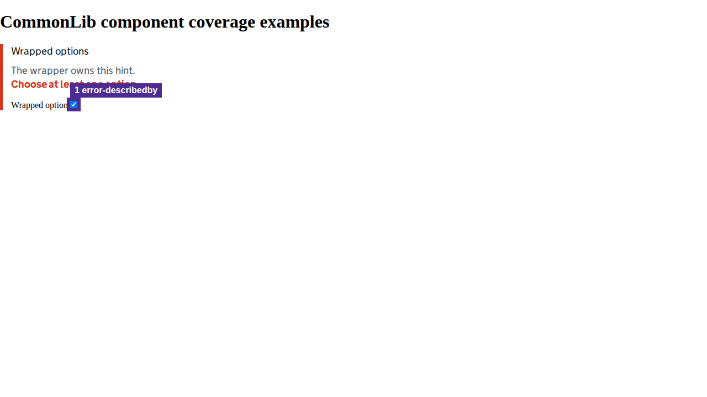

Automated heuristics support investigation; they do not replace screen-reader testing or establish WCAG conformance.
View page screenshot

1. error-describedby
Invalid controls should reference the visible error message.
Selector: #wrapped-option
Inspect DOM snippet
<input id="wrapped-option" type="checkbox" style="">